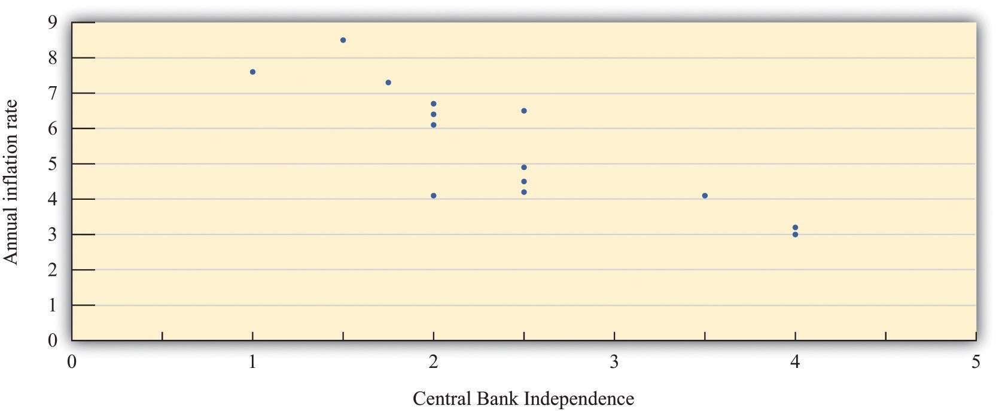

After you have read this section, you should be able to answer the following questions:
We have already explained that money is a fragile social institution: money has value only because people believe it has value. Hyperinflations illustrate this fragility. Large inflations are impressive but, fortunately, are also relatively rare. In other words, most of the time monetary authorities are somehow able to maintain confidence in the system. To understand how they do so, we begin by looking at how hyperinflations come to an end.
As noted in Section 26.3.1 "The Inflation Tax", the rapid inflation in Germany ended abruptly. Although October 1923 was the month with the highest inflation rate, prices actually decreased in early 1924.
How did the hyperinflation end? The answer has to do with the conduct of fiscal policy. On October 15, 1923, a decree created a new currency from the old one. A key element of the decree was limits imposed on the money creation process by the central bank, particularly the provision of credit to the government. According to economist Thomas Sargent, who has studied how hyperinflations end, “This limitation on the amount of credit that could be extended to the government was announced at a time when the government was financing virtually 100 percent of its expenditures by means of note issue.”Thomas Sargent, “The Ends of Four Big Inflations,” in Inflation: Causes and Effects, ed. Robert Hall (Cambridge, MA: National Bureau of Economic Research, 1982), 83. Prior to October 1923, government spending was financed by printing money. After the decree, the printing presses were effectively turned off. As a consequence, the government’s budget went into surplus starting in January 1924. The hyperinflation was over once the printing presses were quiet.
Other countries that experienced hyperinflation around this time had similar stories: there was an abrupt end to hyperinflation after a regime change in which fiscal imbalances were restored. In Austria, for example, the inflation ended when the government established an independent central bank and adopted a fiscal policy that did not require financing by the central bank. The reforms in these countries had two effects: (1) the fiscal reforms limited the budget deficits, and (2) the monetary restrictions implied that deficits would not be financed by the printing of money.
A natural question is: what took them so long? Given the damage caused by these periods of hyperinflation, why did the countries not adopt these policies earlier? Part of the explanation may lie in political affiliations of the governments in these countries. Or, perhaps, these governments simply did not appreciate the rather complex links between fiscal and monetary policy.
Sometimes countries take even more drastic measures to shield monetary policy from political pressures. One is to effectively eliminate the monetary authority and delegate monetary policy to another country. Some small countries do this by simply using another country’s currency. Panama, El Salvador, and Ecuador, for example, have used the US dollar as their currency. Zimbabwe effectively did the same in 2009.
Argentina in the 1990s is an interesting example of a country that went almost—but not quite—that far. Figure 26.10 "The Price Level in Argentina" shows the price level in Argentina from 1988 to 2005. There are evidently three distinct periods: very high inflation, zero inflation, and then moderate inflation. From 1988 to 1993, there was substantial inflation. The annual inflation rate was about 343 percent in 1988 and was over 2,300 percent in 1990. But by 1993 it was only 10 percent, and from 1994 to 2001 it was effectively zero. Then, starting in 2002, there was a resurgence of inflation. What happened?
As we explained earlier, Argentina suffered from hyperinflation in the late 1980s as a consequence of a weak monetary authority. In 1991, Argentina adopted a novel monetary system called a currency boardA fixed exchange rate regime in which each unit of domestic currency is backed by holding the foreign currency, valued at the fixed exchange rate.. Every single peso in circulation was “backed” by a US dollar held by the Central Bank of Argentina. If desired, people had the right to take their pesos to the Central Bank of Argentina and swap them for dollars. Thus Argentina both adopted a fixed exchange rateA regime in which a central bank uses its tools to target the value of the domestic currency in terms of a foreign currency. between the peso and the dollar (1 peso equals $1) and also made that exchange rate credible by always having enough dollars on hand to exchange for the pesos in circulation. For all intents and purposes, Argentina had switched to using US dollars.
Argentina therefore avoided inflation by ceding control of monetary policy to the United States. Since the central bank in the United States controls the quantity of dollars and Argentina linked pesos to dollars, then, everything else the same, the Fed could change the amount of pesos in Argentina, whereas the Central Bank of Argentina could not. The Central Bank of Argentina could resist pressures to inflate by arguing that it did not control the money supply.
Many observers thought at the time that Argentina’s currency board would ensure price stability in Argentina. They thought that there would no longer be pressure on the monetary authority from the fiscal side of the economy. This proved to be incorrect. Taking advantage of its healthy economy in the early 1990s, Argentina adopted expansionary fiscal policies. A combination of factors then triggered recession in the country. Unemployment increased to 18 percent. It was not possible to expand fiscal policy much further, and Argentina had given up its control over monetary problem. In the late 1990s and early 2000s, the recession became so severe that the political pressure on the monetary authority was insurmountable. Argentina abandoned its currency board. One result was a resurgence of inflation.
Another variation on the delegation of monetary policy is that adopted by many countries in Europe. They decided to abandon their currencies and their monetary autonomy in favor of a new currency called the euro. Monetary policy is run by the European Central Bank, which is highly independent. Independent central banks are better able to resist political pressure, so countries that had previously had weak central banks saw a significant advantage in adopting the euro.
Abandoning one’s currency in favor of a new currency, as occurred throughout Europe, seems like a particularly powerful way for a country to commit to a new monetary regime. It is worth remembering, though, that no monetary system is cast is stone. Just as Argentina’s currency board collapsed despite its apparent credibility, so too could a country decide to abandon the euro and reestablish its own currency. Indeed, following fiscal problems in several countries in Europe (most notably Greece, Portugal, and Ireland), there has been some speculation that some countries might eventually choose to do just that.
Hyperinflations arise when the central bank is weak and unable to resist the pressures put on it by others—notably politicians—to use monetary policy for other purposes. Monetary authorities must be able to “just say no.” This suggests that monetary authorities will be able to do a better job if they are independent of other branches of government.
Economists have studied the relationship between measures of the independence of a country’s central bank and the inflation rate in that country. Economists Alberto Alesina and Lawrence Summers examined both political and economic independence of the monetary authority. By political independence, they meant the process of appointing the leadership of the central bank and the role of government officials in the conduct of monetary policy. By economic independence, they meant the extent to which the monetary authority is under pressure to finance the government’s budget deficit.
Figure 26.11 "Central Bank Independence and Inflation" displays data from their research. The horizontal axis shows annual inflation, and the vertical axis is their index of central bank independence, with higher numbers indicating a more independent central bank. The data are averaged over the period 1955–1988. Each point in the figure refers to a particular country. Switzerland and Germany both receive very “high” central bank independence ratings of 4 and have relatively low average inflation. Spain, in contrast, has the second lowest measure of central bank independence and has the highest inflation rate in the study.
Figure 26.11 Central Bank Independence and Inflation
Since the work of Alesina and Summers (and other economists), more and more countries have become convinced of the virtues of having an independent central bank. For example, when the Labour Party came to power in Britain during the 1990s, one of their first acts was to make the Bank of England more independent. This was particularly striking because the Labour Party is a center-left political party, yet independent central banks tend to be conservative, focusing primarily on inflation and not worrying so much about employment and output.
Events in Argentina also attest to the value of an independent central bank. In 2003, the Congress in Argentina passed an act stating,
The Argentine Central Bank is a National State self-governed institution, whose primary and fundamental mission is to preserve the value of the Argentine currency.
When formulating and implementing the monetary and financial policy, it is not subject to the orders, guidelines or instructions of the National Executive branch of government.“BCRA Law,” Banco Central de la República Argentina, accessed September 20, 2011, http://www.bcra.gov.ar/institucional/in010000_i.asp.
There are two key elements in this act. First, the stated goal of the Central Bank of Argentina is to preserve the value of the currency. There is no mention of pursuing full employment, just a version of price stability. Second, the central bank is to be independent of the executive branch of the government.
Under a policy regime called inflation targetingA regime in which the central bank uses its tools to set the inflation rate as close as possible to a target., some central banks use their tools to set the inflation rate as close as possible to a target. Just as we know that a monetary authority cannot literally control interest rates, we know it cannot literally set the inflation rate either. Rather, it can use the policy tools at its disposal to influence the economy in an attempt to reach the target inflation rate.
In its simplest form, the target is some publically announced inflation rate—say, 3 percent. If the monetary authority thinks the inflation rate is likely to be higher than 3 percent for the year, it adopts contractionary monetary policy to reduce the inflation rate. If it thinks that the inflation rate is likely to be lower than the target, it adopts an expansionary policy. Inflation in this world is relatively predictable.
What should the target be? If, as one might believe from all the discussion in the press and elsewhere, inflation is a pernicious problem, then perhaps the inflation target should be zero. Yet most central banks following this policy adopt targets with positive inflation rates, based on the belief that a little bit of inflation may be useful in the economy. One argument often heard is that deflation (negative inflation) is problematic. From a historical perspective, a prolonged period of deflation in the Unites States occurred during the Great Depression and coincided with a negative output growth. More recently, Japan experienced both slow real gross domestic product (real GDP) growth and some periods of deflation during the 1990s.
Many policymakers have apparently concluded that deflation is to be avoided because it could underlie a depression. An alternative possibility is that deflation is correlated with periods of low economic activity, but it is unclear whether it is the cause or the consequence of a sluggish economy. Whatever the connection between deflation and depression, the prevailing wisdom of the Fed (and other central banks) is to avoid deflation. Given that the central banks cannot always hit their targets precisely, aiming for zero inflation makes deflation more likely than when central banks adopt a target with positive inflation.
In addition, a little inflation may make it easier for relative prices and wages to adjust in an economy. If the demand for beef decreases and the demand for pork increases, then the price of beef should decrease, and the price of pork should increase. Such adjustment is straightforward. Similar logic says that if the demand for accountants decreases and the demand for systems analysts increases, then the wages of accountants should decrease, and the wages of systems analysts should increase. This may be more problematic. People typically respond very negatively if there is an attempt to cut their wages. It may be easier for employers to let inflation do the job of reducing the real wage instead. (This is an argument that makes some economists uncomfortable since it implies irrationality on the part of workers. Still, the psychological resistance to nominal wage cuts appears to be strong.)
A second issue is whether the inflation target should be allowed to vary. Instead of announcing a 3 percent target for all times, the monetary authority might decide that the target rate should depend on the state of the economy. For example, they could have a higher target rate in recession and a lower target rate in booms. This way monetary policy could still be used to help keep the economy at potential output.
Finally, there is the question of “punishment” for missing a target. If the purpose of inflation targeting is to support a particular (moderate) inflation rate, then a central banker missing the target ought to be fined or even terminated, just like a manager of a store who persistently misses sales targets. Presumably, if a central bank has goals to achieve, it should also have incentives to meet those goals. Central bankers are often called to testify in front of bodies, such as the US Congress, who monitor the progress of the economy relative to particular targets.
Australia is an example of a country that follows an inflation target rule. According to the charter of the Reserve Bank of Australia (http://www.rba.gov.au/monetary-policy/about.html), the goal of Australian monetary policy is to maintain inflation between 2 and 3 percent annually, on average. The central bank does also recognize of the role of monetary policy for stabilization purposes. Thus even though it has a target range for inflation, it also examines the state of the economy when setting monetary policy. Moreover, the phrase on average means that the central bank has some leeway in the conduct of policy: they can allow inflation to increase above 3 percent for a short while, provided that they eventually take actions to bring the inflation rate back down.